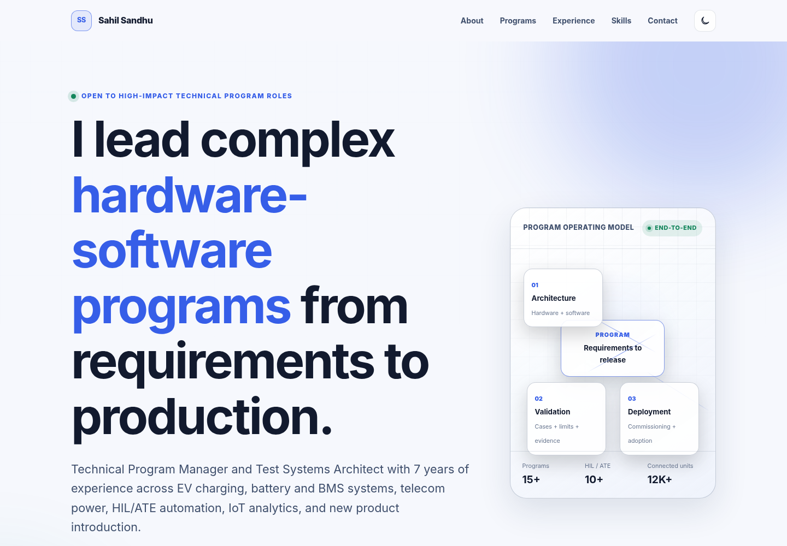

Concept-to-production ownership across hardware-software products.
Open to high-impact technical program roles
I lead complex hardware-software programs from requirements to production.
Technical Program Manager and Test Systems Architect with 7 years across NPI, validation automation, connected-product analytics, and product reliability.

Impact that connects program scope to engineering depth.
Metrics are shown only where the supplied PRD identifies them as public-safe. Private calculation details should stay in Sahil's evidence sheet.
Automated validation platforms spanning architecture, commissioning, and handover.
Analytics-supported reliability programs for connected field products.
Automation and repeatable evidence loops replacing manual validation burden.
Reliability feedback translated into preventive and corrective action.
Diagnostic workflows and service intelligence reducing recovery time.
A program leader who can stay technical when the work gets messy.
Sahil operates across requirements, architecture, validation strategy, automation, release readiness, production rollout, and field feedback.
Program architecture
Frames scope, dependencies, risks, acceptance criteria, release gates, and stakeholder alignment before execution pressure compounds.
Validation systems
Defines test strategy, HIL/ATE architecture, instrumentation, test cases, limits, commissioning, and production handover.
Automation and analytics
Uses Python, SQL, dashboards, APIs, and connected-product telemetry to turn operating signals into reliability decisions.
Cross-functional delivery
Coordinates engineering, operations, suppliers, service, firmware, software, quality, and leadership around measurable outcomes.
Selected technical programs, described without confidential detail.
Each case study keeps customer names, internal product details, test thresholds, and proprietary architecture out of public view.
Validation platform
80% effort reduction
Automated Multi-Product HIL / ATE Platform
- Challenge
- Manual and fragmented validation could not scale cleanly across multiple hardware-software product variants.
- Ownership
- Defined requirements, test architecture, instrumentation, software automation, acceptance limits, commissioning, and handover.
- Approach
- Built repeatable validation workflows across hardware, firmware, software, evidence capture, and production readiness.
- Technical scope
- HIL, ATE, embedded communication, Python automation, test cases, parametric limits, and release evidence.
- Program scope
- Connected engineering, validation, operations, quality, vendors, and production stakeholders.
- Outcome
- Supported 10+ automated systems, reduced validation effort by 80%, and accelerated firmware cycles by 70%.
Connected reliability
12K+ units
Predictive Maintenance and Reliability Analytics
- Challenge
- Field reliability work needed earlier failure signals and a clearer path from telemetry to action.
- Ownership
- Shaped analytics logic, stakeholder workflows, failure review cadence, and service-facing feedback loops.
- Approach
- Used connected-product data, anomaly detection, trend review, and RCA patterns to identify risk earlier.
- Technical scope
- Telemetry, data pipelines, Python analysis, reliability metrics, dashboards, and preventive signal design.
- Program scope
- Aligned product, service, quality, engineering, and operational teams around evidence-backed interventions.
- Outcome
- Supported analytics across 12,000+ connected units, helping lower product failure rates by 45% and MTTR by more than 40%.
Diagnostic tooling
Real-time analysis
BMS Diagnostic GUI and Real-Time Data Logger
- Challenge
- Engineering and service teams needed faster diagnosis without exposing proprietary system internals.
- Ownership
- Translated diagnostic workflows into a usable engineering tool with logging, visualization, and analysis paths.
- Approach
- Designed real-time acquisition, operator flow, automated logging, and data review patterns for repeatable diagnosis.
- Technical scope
- CAN, UART, data acquisition, real-time visualization, Python tooling, structured logs, and analysis routines.
- Program scope
- Connected hardware, firmware, validation, service, and field-debug stakeholders around one diagnostic workflow.
- Outcome
- Improved diagnosis speed and repeatability while keeping implementation details public-safe.
Engineering applications
Role-based workflows
Role-Based Operations and Decision Applications
- Challenge
- Operational decisions were slowed by scattered workflows, unclear ownership, and manual status consolidation.
- Ownership
- Gathered requirements, modeled roles, shaped dashboards, coordinated releases, and supported adoption.
- Approach
- Digitized repeatable workflows with access logic, data structure, reporting, testing, documentation, and training.
- Technical scope
- Flask, Vue.js, APIs, SQL, dashboards, role-based access, workflow states, and release management.
- Program scope
- Worked across engineering, operations, service, quality, and leadership teams to move from manual tracking to governed tools.
- Outcome
- Created clearer decision paths, faster status review, and stronger operational follow-through.
Experience progression at Exicom Tele-Systems.
The PRD confirms Exicom experience, but exact titles, dates, and locations require the latest resume before launch.
-
Technical program and validation ownership
Owned requirements, validation planning, system integration, and release-readiness work across hardware-software products.
-
Automated test systems architecture
Expanded from execution into HIL/ATE architecture, instrumentation planning, test-case definition, commissioning, and production handover.
-
Connected-product analytics and engineering applications
Connected field signals, analytics, diagnostics, dashboards, and operational applications to reliability and service outcomes.
Capabilities grouped by the work they support.
Tools support the story. They do not replace the program outcome.
Program leadership
Technical Program Management, NPI leadership, release readiness, stakeholder alignment, RAID thinking, vendor coordination.
Validation systems
HIL, ATE, test strategy, test cases, acceptance limits, instrumentation, commissioning, production handover.
Embedded and hardware
Battery systems, BMS, EV charging, telecom power, hardware-firmware-software integration, CAN, UART, RS485, Modbus, PLCs.
Automation and data
Python, SQL, Scikit-learn, Power BI, anomaly detection, telemetry review, diagnostic logging, reliability analytics.
Engineering applications
Flask, Vue.js, APIs, role-based access, dashboards, workflow digitization, release documentation, user testing.
Reliability and RCA
Failure modes, corrective action, preventive signals, field feedback, service workflows, product reliability governance.
Education and publication.
These items are included because the PRD requires them. Exact wording must be verified against the latest resume.
IIT Madras qualification
TODO_EDUCATION_DETAILS - replace with exact credential name, dates, and wording from the latest approved resume.
INDO-SWISS education
TODO_EDUCATION_DETAILS - replace with exact diploma, discipline, dates, and institution wording from the latest approved resume.
Publication contribution
TODO_PUBLICATION_DETAILS - replace with verified publication title, role, venue, and date from the latest approved resume.
Ready for senior technical program conversations.
For roles across hardware-software programs, NPI, validation systems, connected products, engineering applications, and reliability.
- Location
- Gurugram, India
- sahilsandhu397@gmail.com
- linkedin.com/in/sahil-sandhu
- Launch note
- TODO_RESUME_PLACEHOLDER - replace resume and contact placeholders before public promotion.